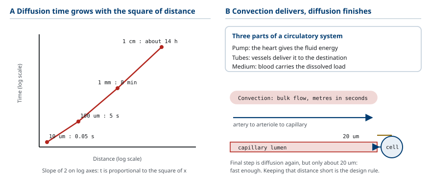
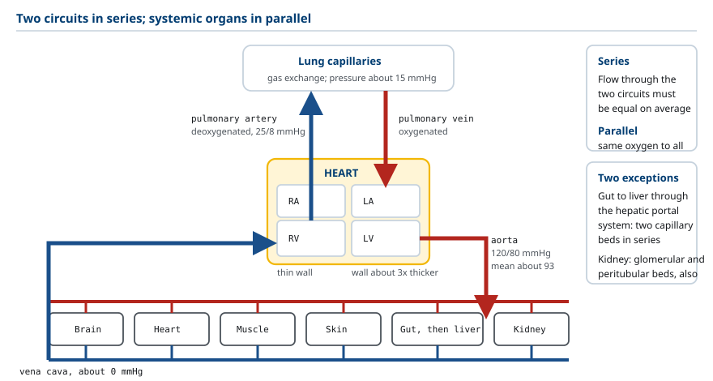
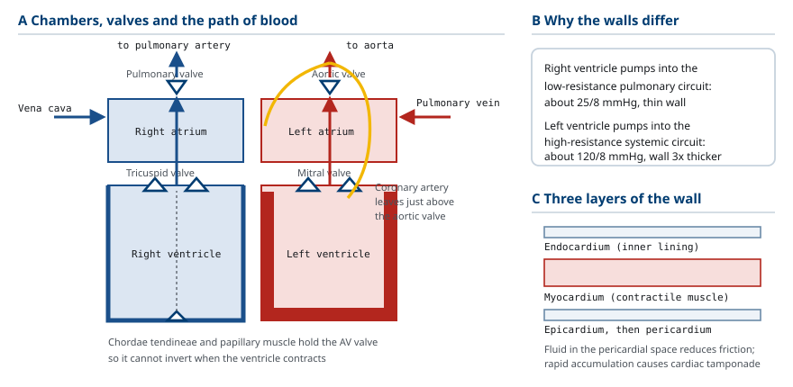
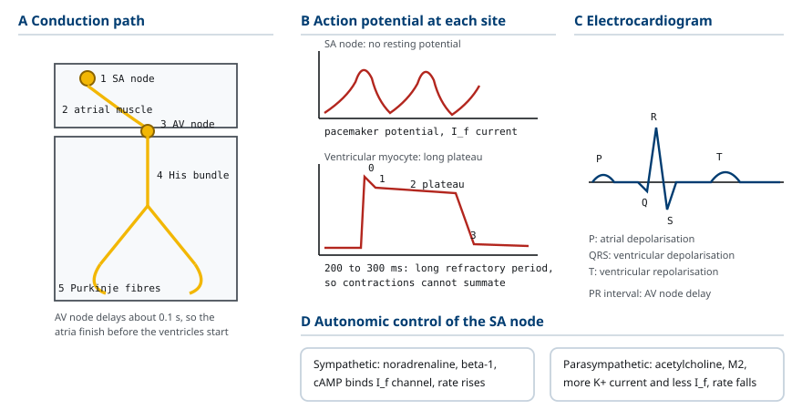
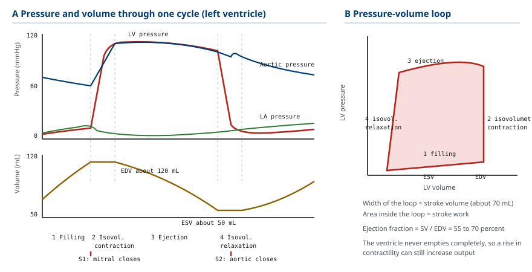
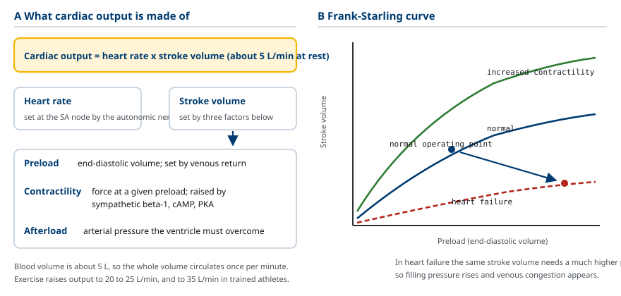
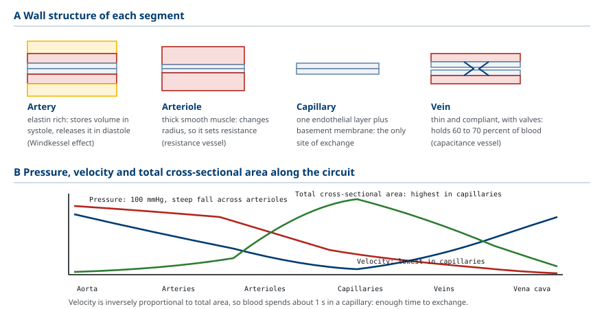
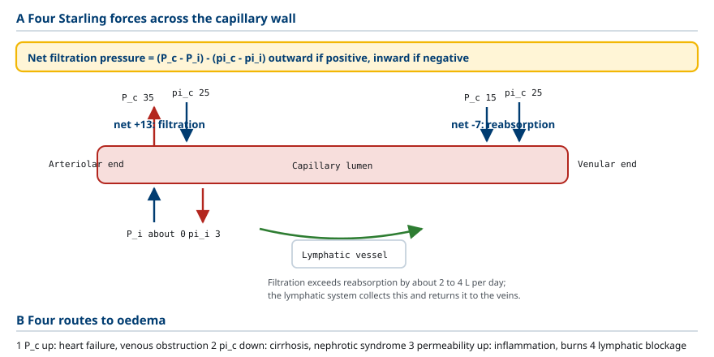
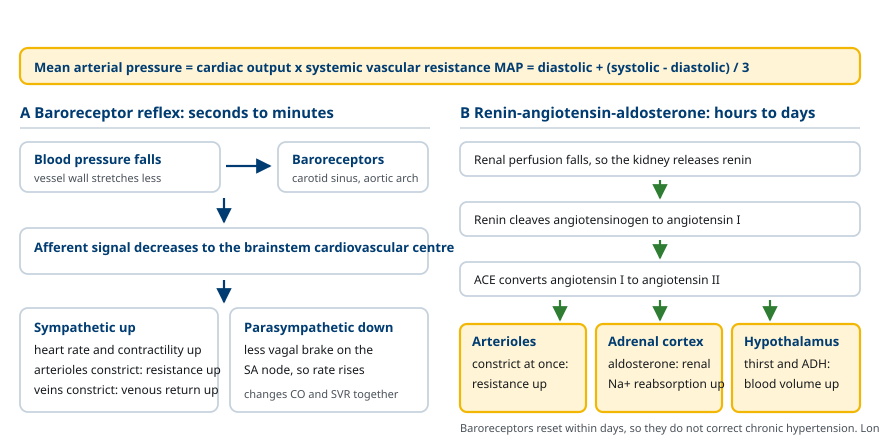

M01-W01-L01 · 인체일반생물학과 기초세포생물학
순환계 요약: 심장·혈관·혈류와 항상성
The Circulatory System: Heart, Vessels, Blood Flow and Homeostasis
학습목표
- 다세포 생물에서 확산만으로 물질 수송이 불가능해지는 조건을 거리와 시간의 관계로 설명하고 순환계가 해결하는 문제를 규정한다.
- 폐순환과 전신순환을 직렬로 놓인 두 회로로 기술하고 각 회로의 압력과 저항이 다른 이유를 설명한다.
- 심장의 네 개 방과 두 종류 판막의 배치를 그리고 한 번의 심주기에서 판막이 열리고 닫히는 순서를 쓴다.
- 심장 전도계의 경로를 쓰고 SA node의 자동능이 어떻게 생기는지 이온 전류로 설명한다.
- 심박출량을 구성하는 두 변수를 정의하고 Frank–Starling 기전과 자율신경 조절이 각각 어느 변수를 바꾸는지 구분한다.
- 동맥·모세혈관·정맥의 벽 구조 차이를 기능과 연결해 설명하고 혈관 구간별 압력·속도·총단면적의 변화를 그린다.
- 혈류와 압력차·저항의 관계를 써서 혈관 반지름이 저항을 결정하는 정도를 계산한다.
- 모세혈관에서의 액체 이동을 Starling 힘으로 설명하고 부종이 생기는 네 가지 경로를 든다.
- 혈압 조절을 단기 반사와 장기 조절로 나누어 설명하고 각 축이 작동하는 시간 규모를 구분한다.
선수지식
- 고등학교 수준의 인체 구조 개관 — 심장, 폐, 혈관의 위치
- 확산과 농도기울기의 개념
- 압력, 유량, 저항의 기본 물리 개념
강의 구성
- 1. 순환계가 해결하는 문제
- 2. 두 개의 회로: 폐순환과 전신순환
- 3. 심장의 구조: 네 개의 방과 두 종류의 판막
- 4. 심장의 전기 활동: 자동능과 전도계
- 5. 심주기: 압력과 용적의 변화
- 6. 심박출량의 조절
- 7. 혈관의 구조와 혈류의 물리
- 8. 모세혈관 교환과 Starling 힘
- 9. 혈압의 조절: 단기 반사와 장기 조절
- 10. 순환계 질환을 읽는 기본 논리
1. 순환계가 해결하는 문제
순환계를 공부할 때 먼저 확정해야 할 것은 이 계통이 무엇을 해결하기 위해 존재하는가다. 세포는 산소와 영양소를 받아들이고 이산화탄소와 대사 폐기물을 내보내야 한다. 단세포 생물이나 두께가 얇은 생물에서는 이 교환이 확산(diffusion) 만으로 충분하다. 문제는 확산이 거리에 대해 매우 비효율적인 수송 방식이라는 점이다.
확산으로 물질이 이동하는 데 걸리는 시간은 거리의 제곱에 비례한다. 산소가 조직 안에서 확산하는 경우를 보면, 10 μm를 이동하는 데 약 0.05초가 걸린다. 거리가 10배인 100 μm가 되면 시간은 100배인 약 5초가 된다. 1 cm, 즉 10,000 μm를 이동하려면 약 14시간이 필요하다. 사람의 몸에서 가장 안쪽 세포가 체표면에서 수십 cm 떨어져 있으므로, 확산만으로 산소를 공급한다면 이 세포는 수십 일을 기다려야 한다. 산소 소비 속도를 생각하면 불가능한 수치다.
따라서 몸집이 커진 동물은 확산을 대체하는 수송 방식을 가져야 한다. 그 방식이 대류(convection, bulk flow), 즉 액체 자체를 이동시켜 녹아 있는 물질을 함께 옮기는 것이다. 순환계는 이 대류 수송을 담당하는 계통이며, 세 요소로 이루어진다.
- 펌프: 액체에 에너지를 주어 흐름을 만드는 심장
- 관: 액체를 목적지까지 전달하는 혈관
- 운반 매체: 물질을 녹이거나 결합해 실어 가는 혈액
중요한 점은 순환계가 확산을 대체하지 않는다는 것이다. 순환계는 대류로 혈액을 세포 근처까지 빠르게 옮기고, 마지막 수십 μm 구간은 다시 확산에 맡긴다. 모세혈관(capillary)의 벽 두께가 한 겹의 세포이고 모든 조직 세포가 모세혈관에서 20 μm 이내에 있는 이유가 여기에 있다. 즉 순환계의 설계 원리는 확산 거리를 짧게 유지하는 것이다.

2. 두 개의 회로: 폐순환과 전신순환
사람의 순환계는 두 개의 회로가 직렬(in series) 로 연결된 구조다. 직렬이라는 말은 한 회로를 지난 혈액이 반드시 다른 회로를 지난다는 뜻이며, 따라서 두 회로를 지나는 혈류량은 시간 평균으로 반드시 같다.
폐순환(pulmonary circulation) 은 우심실에서 시작한다. 우심실이 밀어낸 혈액은 pulmonary artery를 지나 폐의 모세혈관에서 가스 교환을 하고, pulmonary vein을 통해 좌심방으로 돌아온다. 이때 혈액은 이산화탄소를 내주고 산소를 받는다.
전신순환(systemic circulation) 은 좌심실에서 시작한다. 좌심실이 밀어낸 혈액은 aorta와 그 분지를 지나 전신 조직의 모세혈관에서 산소와 영양소를 내주고, vena cava를 통해 우심방으로 돌아온다.
두 회로의 혈류량은 같지만 압력은 크게 다르다. 전신순환의 평균 동맥압은 약 93 mmHg이고 폐순환은 약 15 mmHg다. 압력이 6배 이상 차이 나는 이유는 저항의 차이에 있다. 폐순환은 짧고 혈관이 굵으며 넓게 병렬로 퍼져 있어 저항이 낮다. 전신순환은 몸 전체에 뻗어 있고 세동맥(arteriole)이 좁게 유지되므로 저항이 높다. 같은 혈류를 보내기 위해 높은 저항을 극복해야 하므로 좌심실이 더 큰 압력을 만들어야 하고, 그 결과 좌심실의 벽이 우심실보다 3배 가까이 두껍다.
전신순환의 또 하나의 특징은 대부분의 기관이 병렬(in parallel) 로 연결되어 있다는 점이다. 뇌, 심장, 신장, 근육, 피부가 aorta에서 각각 따로 혈액을 받는다. 병렬 연결에는 두 가지 이점이 있다. 첫째, 모든 기관이 같은 산소 농도의 혈액을 받는다. 둘째, 각 기관의 혈류를 서로 독립적으로 조절할 수 있다. 운동 중에 근육으로 가는 혈류를 늘리면서 뇌로 가는 혈류를 유지할 수 있는 것이 이 구조 덕분이다.
예외가 있다. 소화관에서 나온 혈액은 간을 한 번 더 지난 뒤에 심장으로 돌아간다. 이 직렬 연결을 hepatic portal system이라 하며, 흡수된 영양소와 독성 물질이 전신으로 퍼지기 전에 간에서 처리되게 한다. 신장의 사구체와 세뇨관 주위 모세혈관도 직렬로 이어진 두 번째 예다.
| 비교 항목 | 폐순환 | 전신순환 |
|---|---|---|
| 펌프 | 우심실 | 좌심실 |
| 평균 압력 | 약 15 mmHg | 약 93 mmHg |
| 저항 | 낮음 | 높음 |
| 심실 벽 두께 | 얇음 | 두꺼움 (약 3배) |
| 혈류량 | 심박출량과 동일 | 심박출량과 동일 |
| 모세혈관의 기능 | 가스 교환 | 산소·영양소 공급과 폐기물 수거 |

3. 심장의 구조: 네 개의 방과 두 종류의 판막
심장은 네 개의 방으로 이루어진다. 위쪽의 두 심방(atrium) 은 돌아온 혈액을 받아 아래로 넘기고, 아래쪽의 두 심실(ventricle) 은 혈액을 회로로 밀어낸다. 심방은 혈액을 심실로 보내기만 하므로 벽이 얇고, 심실은 회로의 저항을 이겨야 하므로 벽이 두껍다.
혈액이 한 방향으로만 흐르게 하는 장치가 판막(valve) 이다. 판막은 압력차에 의해 수동적으로 열리고 닫히며, 근육처럼 능동적으로 작동하지 않는다. 판막은 두 종류다.
- Atrioventricular valve (AV valve): 심방과 심실 사이에 있다. 오른쪽이 tricuspid valve, 왼쪽이 mitral valve(bicuspid valve)다. 판막 끝에 chordae tendineae가 붙고 그 끝이 papillary muscle에 연결되어, 심실이 수축할 때 판막이 심방 쪽으로 뒤집히는 것을 막는다.
- Semilunar valve: 심실과 동맥 사이에 있다. 오른쪽이 pulmonary valve, 왼쪽이 aortic valve다. 반달 모양의 세 조각으로 이루어지고 chordae tendineae가 없다.
심장 자신도 혈액 공급을 받아야 한다. 심장 안을 지나는 혈액으로부터 확산으로 산소를 얻는 것은 벽이 두꺼워 불가능하므로, aorta가 시작되는 바로 위에서 갈라지는 coronary artery가 심근에 혈액을 공급한다. 좌심실이 수축하는 동안에는 심근 자체가 coronary artery를 눌러 혈류가 줄고, 이완기에 혈류가 주로 흐른다. 따라서 심장의 혈액 공급은 이완기에 의존한다. 심박수가 지나치게 빨라지면 이완기가 짧아져 심근 허혈이 생기는 이유가 여기에 있다.
심장 벽은 세 층이다. 안쪽의 endocardium, 가운데의 두꺼운 근육층 myocardium, 바깥의 epicardium이다. 심장 전체는 pericardium이라는 두 겹의 막에 싸여 있고 그 사이 공간에 소량의 액체가 있어 마찰을 줄인다.

4. 심장의 전기 활동: 자동능과 전도계
심장은 신경 자극 없이도 스스로 박동한다. 이 성질을 자동능(automaticity) 이라 하며, 심장을 몸에서 떼어내 적절한 용액에 담가도 박동이 계속되는 것으로 확인된다. 자동능을 가진 세포는 심근 전체가 아니라 특수화된 전도계 세포들이다.
전도계의 경로는 다음과 같다.
1. Sinoatrial node (SA node): 우심방의 위쪽 벽에 있다. 분당 60~100회의 빈도로 가장 빠르게 흥분하므로 심장의 박동 속도를 결정한다. 이 때문에 정상 pacemaker라 부른다. 2. 심방 근육: SA node의 흥분이 심방 전체로 퍼져 심방이 수축한다. 3. Atrioventricular node (AV node): 심방과 심실 사이의 유일한 전기적 통로다. 전도 속도가 느려 약 0.1초의 지연이 생긴다. 이 지연 덕분에 심방 수축이 끝난 뒤에 심실 수축이 시작된다. 4. His 속과 Purkinje 섬유: 전도 속도가 매우 빨라 심실 전체를 거의 동시에 흥분시킨다. 심실 수축이 심첨부에서 시작해 위로 짜 올리는 순서가 되므로 혈액이 동맥 쪽으로 효과적으로 밀려난다.
SA node의 자동능은 이온 전류의 조합으로 만들어진다. SA node 세포에는 안정 막전위가 없다. 재분극이 끝난 직후부터 funny current(I_f)라 불리는 비선택적 양이온 전류가 서서히 안쪽으로 흘러 막전위를 점점 올린다. 이 서서히 올라가는 전위를 pacemaker potential이라 한다. 역치에 닿으면 T형과 L형 Ca²⁺ 통로가 열려 탈분극이 일어나고, K⁺ 통로가 열려 재분극한 뒤 다시 I_f가 시작된다. 심근 세포의 활동전위에서 탈분극을 Na⁺ 전류가 담당하는 것과 달리, SA node에서는 Ca²⁺ 전류가 담당한다는 점이 차이다.
자율신경은 자동능의 속도를 바꾼다. 교감신경에서 나온 노르에피네프린은 β₁ 수용체를 통해 cAMP를 올리고, cAMP가 I_f 통로에 직접 결합해 전류를 키우므로 pacemaker potential이 빠르게 올라가 심박수가 늘어난다. 부교감신경의 아세틸콜린은 M₂ 수용체를 통해 K⁺ 전류를 늘리고 I_f를 줄여 심박수를 낮춘다. 안정 상태에서는 부교감신경의 영향이 우세하므로 실제 심박수는 SA node 고유의 빈도보다 낮은 분당 약 70회가 된다.
심근 세포들은 gap junction으로 연결되어 전기적으로 하나처럼 움직인다. 이 때문에 심방 전체와 심실 전체가 각각 하나의 기능 단위(functional syncytium)로 수축한다. 또한 심근 활동전위는 긴 평탄기(plateau)를 가져 지속 시간이 약 200~300 ms에 이르고, 그 결과 불응기가 길어 골격근처럼 수축이 겹쳐 쌓이는 현상(tetanus)이 일어나지 않는다. 심장이 수축과 이완을 반드시 번갈아 해야 하므로 이는 필수적인 성질이다.

5. 심주기: 압력과 용적의 변화
한 번의 박동에서 일어나는 사건의 연속을 심주기(cardiac cycle) 라 한다. 심주기는 심실을 기준으로 수축기(systole)와 이완기(diastole)로 나뉘고, 판막의 개폐는 전적으로 압력차에 따라 결정된다. 좌심실을 기준으로 네 단계로 정리하면 다음과 같다.
1. 충만기(ventricular filling, 이완기): 심실압이 심방압보다 낮으므로 mitral valve가 열려 있고 혈액이 심실로 들어온다. 처음에는 압력차에 의해 빠르게 들어오고, 마지막 약 20%는 심방 수축이 밀어 넣는다. 충만이 끝난 시점의 심실 용적을 end-diastolic volume (EDV) 이라 하며 약 120 mL다. 2. 등용적 수축기(isovolumetric contraction): 심실이 수축을 시작해 심실압이 심방압을 넘으면 mitral valve가 닫힌다. 그러나 아직 aorta 압력보다는 낮으므로 aortic valve도 닫혀 있다. 두 판막이 모두 닫힌 상태에서 심실이 수축하므로 용적은 변하지 않고 압력만 급격히 오른다. Mitral valve가 닫히는 소리가 제1심음(S1)이다. 3. 구출기(ejection): 심실압이 aorta 압력을 넘으면 aortic valve가 열리고 혈액이 나간다. 이때 나가는 양이 일회박출량(stroke volume, SV) 으로 약 70 mL다. 구출이 끝난 뒤 남은 용적이 end-systolic volume (ESV) 으로 약 50 mL다. 4. 등용적 이완기(isovolumetric relaxation): 심실이 이완해 심실압이 aorta 압력보다 낮아지면 aortic valve가 닫힌다. 이 소리가 제2심음(S2)이다. Mitral valve가 아직 닫혀 있으므로 용적은 변하지 않고 압력만 급격히 떨어진다.
여기서 구혈률(ejection fraction, EF) 이 정의된다. EF = SV / EDV이며 정상은 55~70%다. 즉 심실은 담고 있던 혈액을 전부 내보내지 않고 절반 남짓만 내보낸다. 이 여유분이 있기 때문에 수축력을 높이면 박출량을 늘릴 수 있다.
심주기는 압력–용적 고리(pressure–volume loop)로 그리면 한눈에 정리된다. 고리의 가로 폭이 일회박출량이고, 고리로 둘러싸인 면적이 심실이 한 번의 박동에서 한 일(stroke work) 이다.

6. 심박출량의 조절
단위 시간에 심장이 내보내는 혈액량이 심박출량(cardiac output, CO) 이며, 두 변수의 곱으로 정의된다.
CO = 심박수(heart rate, HR) × 일회박출량(stroke volume, SV)
정상 안정 상태에서 분당 약 70회 × 70 mL = 약 5 L/min이다. 전신의 혈액량이 약 5 L이므로, 혈액 전체가 1분에 한 바퀴를 돈다는 뜻이다. 격렬한 운동에서 심박출량은 20~25 L/min까지, 훈련된 운동선수에서는 35 L/min까지 올라갈 수 있다.
심박수는 앞 절에서 본 대로 자율신경이 SA node에 작용해 조절한다. 일회박출량은 세 요소로 결정된다.
- 전부하(preload): 수축 직전 심실이 늘어난 정도, 실질적으로 EDV다. 정맥 환류량이 전부하를 정한다.
- 수축력(contractility): 같은 전부하에서 심실이 내는 힘. 교감신경과 카테콜아민이 올린다.
- 후부하(afterload): 심실이 혈액을 내보내기 위해 이겨야 하는 압력, 실질적으로 동맥압이다. 후부하가 높아지면 일회박출량이 줄어든다.
전부하와 일회박출량의 관계가 Frank–Starling 기전이다. 심실로 들어온 혈액이 많아 심근이 더 늘어나면, 심장은 더 강하게 수축해 들어온 양만큼을 내보낸다. 분자 수준의 근거는 두 가지다. 첫째, 심근이 늘어나면 actin과 myosin의 겹침 정도가 최적에 가까워져 만들어지는 힘이 커진다. 둘째, 늘어난 상태에서 troponin C의 Ca²⁺ 민감도가 높아진다.
Frank–Starling 기전의 의미는 심장이 스스로 유입량과 배출량을 맞춘다는 것이다. 신경 조절 없이도 좌심실과 우심실의 박출량이 자동으로 같아지며, 자세를 바꾸거나 호흡에 따라 정맥 환류가 변해도 박출량이 따라간다. 반대로 말하면, 심박출량의 상한을 정하는 것은 많은 경우 심장의 힘이 아니라 정맥 환류량이다.
수축력은 Frank–Starling 곡선 자체를 위아래로 옮긴다. 교감신경이 활성화되면 β₁ 수용체–cAMP–PKA 경로가 L형 Ca²⁺ 통로와 SERCA를 인산화해 세포 안으로 들어오는 Ca²⁺을 늘리고 sarcoplasmic reticulum이 Ca²⁺을 더 빨리 회수하게 한다. 그 결과 같은 EDV에서 더 큰 박출량이 나오고 이완도 빨라진다. 심부전에서는 곡선이 아래로 내려가므로 같은 박출량을 내려면 더 높은 EDV, 즉 더 높은 충만압이 필요하고, 그 결과 폐나 전신에 정맥 울혈이 생긴다.

7. 혈관의 구조와 혈류의 물리
혈관은 하나의 관이 아니라 구간마다 벽 구조와 기능이 다르게 분화되어 있다. 모든 혈관 벽은 안쪽의 endothelium(한 겹의 내피세포), 가운데의 smooth muscle과 elastin 층, 바깥의 결합조직 층으로 이루어지지만 각 층의 두께가 크게 다르다.
- 동맥(artery): Elastin이 풍부하다. 심실이 수축할 때 늘어나 혈액을 저장하고, 이완기에 되돌아오며 혈액을 밀어낸다. 그 결과 박동하는 심장의 출력이 연속적인 흐름으로 바뀐다. 이 완충 작용을 Windkessel 효과라 한다.
- 세동맥(arteriole): Smooth muscle이 상대적으로 두껍고 신경·호르몬·국소 대사물질에 민감하다. 반지름을 바꿔 저항을 조절하므로 저항 혈관(resistance vessel) 이라 부르며, 전신 혈관 저항의 대부분을 담당한다.
- 모세혈관(capillary): 내피세포 한 겹과 기저막만 있다. 물질 교환이 일어나는 유일한 구간이므로 교환 혈관(exchange vessel) 이다.
- 정맥(vein): 벽이 얇고 잘 늘어난다. 전체 혈액량의 약 60~70%를 담고 있어 용량 혈관(capacitance vessel) 이라 부른다. 판막이 있어 역류를 막고, 주변 근육의 수축이 혈액을 심장 쪽으로 밀어 올린다(근육 펌프).
혈류의 물리는 전기 회로의 Ohm 법칙과 같은 형태로 정리된다.
Q = ΔP / R
Q는 혈류량, ΔP는 구간 양 끝의 압력차, R은 저항이다. 여기서 흔히 혼동되는 점을 분명히 해야 한다. 혈류를 만드는 것은 압력 자체가 아니라 압력 차다.
저항은 Poiseuille 관계로 주어진다.
R = 8ηL / (πr⁴)
η는 점성, L은 관의 길이, r은 반지름이다. 분모에 r의 네제곱이 있다는 점이 결정적이다. 반지름이 절반으로 줄면 저항은 16배가 되고, 반지름이 2배가 되면 저항은 1/16이 된다. 몸에서 길이와 점성은 거의 고정되어 있으므로, 혈류 조절은 사실상 반지름 조절이다. 세동맥의 smooth muscle이 조금만 수축해도 그 기관의 혈류가 크게 변하는 이유다.
여러 혈관이 병렬로 연결되면 전체 저항은 각 혈관의 저항보다 작아진다. 모세혈관 하나하나는 매우 가늘어 저항이 크지만, 약 100억 개가 병렬로 놓여 있으므로 모세혈관 구간 전체의 저항은 세동맥 구간보다 낮다.
혈관 구간별 압력, 속도, 총단면적의 변화는 함께 보아야 한다. 압력은 aorta에서 약 100 mmHg로 시작해 세동맥을 지나면서 급격히 떨어지고(저항의 대부분이 여기 있으므로), 모세혈관에서 약 30 mmHg, 우심방에서 약 0 mmHg가 된다. 혈류 속도는 총단면적에 반비례한다. 모세혈관의 총단면적이 aorta의 수백 배이므로 모세혈관에서 혈류 속도가 가장 느리고, 그 결과 혈액이 모세혈관에 머무는 시간이 약 1초로 늘어나 교환에 충분한 시간이 확보된다.
| 혈관 구간 | 주된 기능 | 벽의 특징 | 압력 변화 |
|---|---|---|---|
| Aorta·대동맥 | 압력 완충, 전달 | elastin 풍부 | 100 mmHg, 작게 감소 |
| 세동맥 | 저항 조절 | smooth muscle 두꺼움 | 급격히 감소 |
| 모세혈관 | 물질 교환 | 내피 한 겹 | 35 → 15 mmHg |
| 정맥·대정맥 | 혈액 저장, 환류 | 얇고 잘 늘어남, 판막 | 15 → 0 mmHg |

8. 모세혈관 교환과 Starling 힘
모세혈관에서 일어나는 교환은 두 가지 방식으로 나누어 보아야 한다.
확산은 산소, 이산화탄소, 포도당, 아미노산 같은 용질의 주된 교환 방식이다. 지질에 잘 녹는 산소와 이산화탄소는 내피세포의 막을 그대로 통과하고, 물에 녹는 포도당 같은 물질은 내피세포 사이의 틈을 지난다. 확산의 방향과 양은 농도기울기가 정한다.
액체 자체의 이동은 네 가지 압력의 합으로 결정되며, 이 압력들을 Starling 힘(Starling forces) 이라 한다.
- 모세혈관 내 정수압(P_c): 액체를 밖으로 밀어낸다. 모세혈관 시작부에서 약 35 mmHg, 끝에서 약 15 mmHg
- 간질액 정수압(P_i): 액체를 안으로 밀어 넣는다. 거의 0에 가깝거나 약간 음압
- 혈장 교질삼투압(π_c): 액체를 안으로 끌어당긴다. 약 25 mmHg. 주로 albumin이 만든다
- 간질액 교질삼투압(π_i): 액체를 밖으로 끌어당긴다. 약 3 mmHg
순 여과압 = (P_c − P_i) − (π_c − π_i)
모세혈관 시작부에서는 정수압이 교질삼투압보다 커서 액체가 밖으로 나가고(여과, filtration), 끝부분에서는 정수압이 떨어져 교질삼투압이 우세해지므로 액체가 들어온다(재흡수, reabsorption). 전체적으로는 나가는 양이 들어오는 양보다 약간 많으며, 하루에 약 2~4 L의 차이가 생긴다. 이 여분의 액체는 림프계(lymphatic system) 가 모아 정맥으로 돌려보낸다.
이 구조를 이해하면 부종(edema) 이 생기는 경로를 네 가지로 정리할 수 있다.
1. 모세혈관 정수압 상승: 정맥 압력이 올라가는 경우. 심부전, 정맥 폐쇄, 오래 서 있는 자세 2. 혈장 교질삼투압 저하: albumin이 부족한 경우. 간경변(합성 저하), 신증후군(소실), 심한 영양 부족 3. 모세혈관 투과성 증가: 단백질이 간질로 빠져나가 π_i가 올라가는 경우. 염증, 화상, 알레르기 반응 4. 림프 배출 장애: 여분의 액체를 거두지 못하는 경우. 림프절 절제 후, 기생충에 의한 림프관 폐쇄

9. 혈압의 조절: 단기 반사와 장기 조절
혈압은 심박출량과 전신 혈관 저항의 곱으로 결정된다.
평균 동맥압(MAP) = 심박출량(CO) × 전신 혈관 저항(SVR)
MAP은 수축기압과 이완기압의 산술 평균이 아니다. 심주기에서 이완기가 수축기보다 길기 때문에 이완기압에 가중치가 더 붙으며, 실용적으로는 MAP ≈ 이완기압 + (수축기압 − 이완기압)/3으로 추정한다. 수축기압과 이완기압의 차이를 맥압(pulse pressure) 이라 하고, 일회박출량과 동맥의 탄성이 이를 결정한다. 나이가 들어 동맥의 elastin이 줄고 벽이 굳으면 같은 박출량에도 수축기압이 더 올라가 맥압이 커진다.
혈압 조절은 작동하는 시간 규모로 나누어 보아야 한다.
단기 조절(초~분): 압력수용체 반사(baroreceptor reflex). Carotid sinus와 aortic arch의 혈관 벽에 늘어남을 감지하는 수용체가 있다. 혈압이 떨어지면 벽이 덜 늘어나 구심성 신호가 줄고, 뇌줄기의 심장혈관 중추가 이를 받아 교감신경 활성을 올리고 부교감신경 활성을 낮춘다. 그 결과 심박수와 수축력이 올라가고(심박출량 증가) 세동맥과 정맥이 수축한다(저항 증가, 정맥 환류 증가). 혈압이 올라가면 반대 방향으로 작동한다. 이 반사는 수 초 안에 작동하며, 누운 자세에서 일어설 때 혈압이 유지되는 것이 그 결과다.
중기 조절(분~시간): 혈압이 떨어지면 모세혈관 정수압도 떨어져 간질액이 혈관으로 재흡수된다. 이 액체 이동이 혈액량을 조금 회복시킨다. 또한 신장에서 renin이 분비되기 시작한다.
장기 조절(시간~일): 신장과 체액량. 장기적으로 혈압을 결정하는 것은 혈액량이며, 혈액량을 정하는 것은 신장이 내보내는 Na⁺와 물의 양이다. 혈압이 떨어지면 renin–angiotensin–aldosterone system이 작동한다. Renin이 angiotensinogen을 잘라 angiotensin I을 만들고, ACE가 이를 angiotensin II로 바꾼다. Angiotensin II는 세동맥을 수축시켜 즉시 저항을 올리고, 부신에서 aldosterone 분비를 자극해 신장의 Na⁺ 재흡수를 늘리며, 갈증과 ADH 분비를 자극한다. 결과적으로 혈액량이 늘어 혈압이 회복된다.
압력수용체 반사와 신장 조절의 관계에서 중요한 점은, 압력수용체가 며칠 안에 새로운 혈압에 적응(resetting) 한다는 사실이다. 따라서 만성 고혈압을 압력수용체 반사가 교정해 주지는 않는다. 만성 혈압 조절의 책임은 신장에 있고, 이것이 고혈압 치료 약물의 상당수가 신장과 RAAS를 표적으로 하는 이유다.
| 조절 축 | 작동 시간 | 주요 작용 지점 | 바뀌는 변수 |
|---|---|---|---|
| 압력수용체 반사 | 초~분 | SA node, 심근, 세동맥, 정맥 | 심박수, 수축력, 저항 |
| 모세혈관 액체 이동 | 분~시간 | 모세혈관 | 혈액량 |
| RAAS | 시간~일 | 세동맥, 신장, 부신 | 저항, 혈액량 |
| ADH·갈증 | 시간~일 | 신장 집합관, 시상하부 | 혈액량 |
| 심방 natriuretic peptide | 시간 | 신장 | 혈액량 감소 방향 |

10. 순환계 질환을 읽는 기본 논리
순환계 질환은 앞 절들에서 세운 식과 구조로 되돌려 읽을 수 있다. 개별 질환을 외우기 전에 어느 변수가 어느 방향으로 틀어졌는지를 묻는 습관이 중요하다.
펌프의 문제. 심부전은 Frank–Starling 곡선이 아래로 내려간 상태다. 수축기 심부전에서는 수축력이 떨어져 구혈률이 낮아지고(EF 감소), 이완기 심부전에서는 심실이 굳어 충만이 제한되어 EDV가 작아진다. 두 경우 모두 결과는 심박출량 부족과 상류 울혈이다. 좌심실이 약하면 폐에 울혈이 생겨 호흡곤란이 나타나고, 우심실이 약하면 전신 정맥에 울혈이 생겨 다리 부종과 간 비대가 나타난다.
판막의 문제. 판막이 좁아지면(stenosis) 상류 방이 더 높은 압력을 만들어야 하므로 벽이 두꺼워진다. 판막이 새면(regurgitation) 같은 혈액이 되돌아오므로 전방 박출량을 유지하려면 더 많은 용적을 담아야 하고, 그 결과 방이 늘어난다. 즉 좁아짐은 압력 부하, 새는 것은 용적 부하다.
관의 문제. Atherosclerosis는 동맥 벽에 지질과 염증 세포가 쌓여 내강이 좁아지는 과정이다. Poiseuille 관계에 따라 반지름이 조금 줄어도 저항이 크게 늘어 혈류가 부족해진다. Coronary artery에서 일어나면 심근 허혈, 뇌동맥에서 일어나면 뇌졸중, 하지 동맥에서 일어나면 간헐적 다리 통증이 된다. Plaque가 터지면 혈전이 생겨 혈류가 급격히 막히고, 이것이 심근경색과 뇌경색의 직접 기전이다.
압력의 문제. 고혈압은 MAP = CO × SVR의 두 항 가운데 어느 것이 올라갔는지로 분류할 수 있다. 대부분의 본질성 고혈압에서는 전신 혈관 저항이 올라가 있고, 신장의 Na⁺ 처리가 그 배경에 있다. 고혈압이 오래 지속되면 좌심실이 높은 후부하에 맞서 두꺼워지고(좌심실 비대), 동맥 벽이 손상되어 atherosclerosis가 촉진되며, 신장의 작은 혈관이 망가져 신기능이 떨어진다.
리듬의 문제. 전도계의 자동능이나 전도가 틀어지면 부정맥이 된다. Atrial fibrillation에서는 심방이 효과적으로 수축하지 않아 전부하가 줄고, 심방 안에 혈액이 정체해 혈전이 생겨 뇌로 날아갈 수 있다. AV node의 전도가 막히면 심실이 느린 고유 빈도로 뛰게 되어 심박출량이 떨어진다.
확인 문항
확산만으로는 사람의 몸에서 산소를 공급할 수 없는 이유를 거리와 시간의 관계로 설명하시오. 그리고 순환계가 확산을 완전히 대체하지 않는 이유를 쓰시오.
해설
확산으로 물질이 이동하는 데 걸리는 시간은 거리의 제곱에 비례한다. 10 μm에 약 0.05초가 걸리는 산소는 1 cm를 이동하는 데 약 14시간이 걸리므로, 수십 cm 떨어진 세포에 확산만으로 산소를 공급하는 것은 불가능하다. 순환계는 대류로 혈액을 세포 근처까지 빠르게 옮기지만, 모세혈관 벽에서 세포까지의 마지막 20 μm 이내 구간은 여전히 확산이 담당한다. 순환계의 설계 원리는 확산을 없애는 것이 아니라 확산 거리를 짧게 유지하는 것이다.
폐순환과 전신순환은 같은 혈류량을 받는데도 압력이 6배 이상 다르다. 그 이유를 Q = ΔP / R로 설명하고, 이 차이가 심장 구조에 남긴 결과를 쓰시오.
해설
두 회로는 직렬이므로 혈류량 Q가 같다. Q = ΔP / R에서 Q가 같고 폐순환의 저항 R이 전신순환보다 훨씬 낮으므로 필요한 압력차 ΔP도 그만큼 작다. 폐순환은 짧고 혈관이 굵으며 넓게 병렬로 퍼져 있어 저항이 낮고, 전신순환은 몸 전체에 뻗어 있고 세동맥이 좁게 유지되어 저항이 높다. 높은 압력을 만들어야 하는 좌심실의 벽이 우심실보다 약 3배 두껍다.
심주기에서 등용적 수축기에 심실 용적이 변하지 않는 이유를 판막의 상태로 설명하고, 이 단계의 시작과 끝에 어떤 심음이 들리는지 쓰시오.
해설
심실압이 심방압을 넘으면 mitral valve가 닫히고, 아직 aorta 압력보다는 낮으므로 aortic valve도 닫혀 있다. 두 판막이 모두 닫혀 심실이 닫힌 공간이 되므로 수축해도 혈액이 나가지 못하고 압력만 오른다. 이 단계의 시작에서 mitral valve가 닫히는 소리가 제1심음(S1)이고, 구출기가 끝나고 aortic valve가 닫히는 소리가 제2심음(S2)으로 등용적 이완기의 시작을 알린다.
Frank–Starling 기전이 분자 수준에서 성립하는 근거 두 가지를 쓰고, 이 기전이 좌·우 심실의 박출량을 자동으로 같게 만드는 과정을 설명하시오.
해설
근거는 두 가지다. 첫째, 심근이 늘어나면 actin과 myosin 필라멘트의 겹침 정도가 최적에 가까워져 발생하는 힘이 커진다. 둘째, 늘어난 상태에서 troponin C의 Ca²⁺ 민감도가 높아진다. 두 심실이 직렬로 연결되어 있으므로 한쪽이 많이 내보내면 다른 쪽의 유입량이 늘고, 늘어난 전부하가 그 심실의 박출량을 같은 만큼 늘린다. 신경 조절 없이도 두 심실의 박출량이 수렴한다.
세동맥의 반지름이 20% 줄었을 때 그 혈관의 저항은 몇 배가 되는가? 계산 과정을 쓰고, 이 결과가 혈류 조절에서 갖는 의미를 설명하시오.
해설
R = 8ηL/(πr⁴)에서 저항은 r의 네제곱에 반비례한다. 반지름이 0.8배가 되면 저항은 1/0.8⁴ = 1/0.4096 ≈ 2.44배가 된다. 즉 반지름이 20% 줄면 저항이 약 2.4배로 늘어난다. 길이와 점성이 사실상 고정된 몸에서 혈류 조절은 반지름 조절이며, 세동맥 smooth muscle의 작은 수축만으로도 그 기관의 혈류를 크게 바꿀 수 있다.
모세혈관에서 혈류 속도가 가장 느린 이유를 총단면적과 연결해 설명하고, 이 성질이 교환에 어떤 이점을 주는지 쓰시오.
해설
어느 구간에서도 단위 시간에 지나는 혈류량이 같으므로, 혈류 속도는 그 구간의 총단면적에 반비례한다. 모세혈관은 하나하나가 가늘지만 약 100억 개가 병렬로 놓여 총단면적이 aorta의 수백 배에 이르므로 속도가 가장 느려진다. 그 결과 혈액이 모세혈관에 머무는 시간이 약 1초로 늘어나 확산에 의한 교환이 충분히 일어날 수 있다.
간경변 환자와 심부전 환자에게 모두 부종이 생긴다. 두 경우에 변한 Starling 힘이 각각 무엇인지 지목하고, 순 여과압 식을 써서 설명하시오.
해설
순 여과압 = (P_c − P_i) − (π_c − π_i)다. 간경변에서는 간의 albumin 합성이 줄어 혈장 교질삼투압 π_c가 떨어지므로 뺄 항이 작아져 순 여과압이 커진다. 심부전에서는 정맥압이 올라가 모세혈관 정수압 P_c가 올라가므로 앞 항이 커져 순 여과압이 커진다. 두 경우 모두 여과가 늘어 간질에 액체가 쌓이지만 변한 항이 다르므로 치료 방향도 다르다.
만성 고혈압을 압력수용체 반사가 교정하지 못하는 이유를 설명하고, 장기적인 혈압 조절의 책임이 어디에 있는지 쓰시오.
해설
압력수용체는 며칠 안에 새로운 혈압 수준에 적응(resetting)해, 높아진 혈압을 새로운 기준으로 받아들이고 그 주위의 변동에만 반응한다. 따라서 만성적으로 올라간 혈압 자체를 끌어내리지 못한다. 장기적인 혈압은 혈액량이 결정하고, 혈액량은 신장이 내보내는 Na⁺와 물의 양이 정한다. 만성 혈압 조절의 책임은 신장에 있고, 이 때문에 고혈압 치료제의 상당수가 신장과 RAAS를 표적으로 한다.
참고문헌
- Hall JE, Hall ME. Guyton and Hall Textbook of Medical Physiology. 14th ed. Elsevier; 2021. Unit III–IV, 심장과 순환.
- Boron WF, Boulpaep EL. Medical Physiology. 3rd ed. Elsevier; 2017. Section IV, The Cardiovascular System.
- Barrett KE, Barman SM, Brooks HL, Yuan JXJ. Ganong's Review of Medical Physiology. 26th ed. McGraw Hill; 2019. Section V, Cardiovascular Physiology.
- Costanzo LS. Physiology. 7th ed. Elsevier; 2022. Chapter 4, Cardiovascular Physiology.
- Levick JR. An Introduction to Cardiovascular Physiology. 5th ed. CRC Press; 2010.
- Klabunde RE. Cardiovascular Physiology Concepts. 3rd ed. Wolters Kluwer; 2021.
- Starling EH. On the absorption of fluids from the connective tissue spaces. J Physiol. 1896;19(4):312–326.